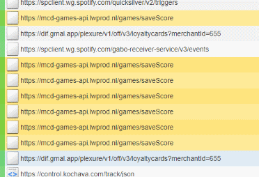
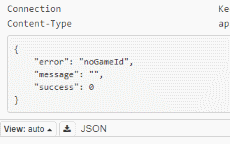
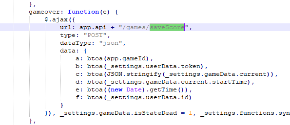
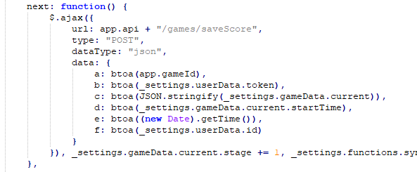
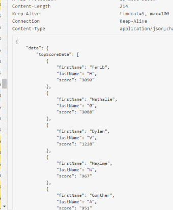
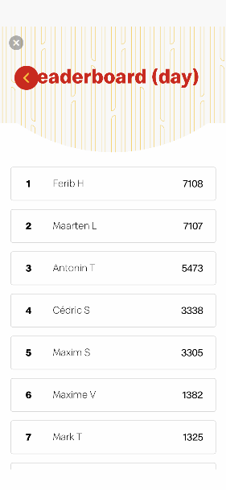

How I automated McDonalds FriesHit game to win free iPhones30/09/2020
McDonald's is running a promotion where you have to play a mobile game on your phone to have a chance at winning an iPhone. The game I'm talking about is called "FriesHit", it's a minigame that's located inside the McDonald's Mobile application (Belgium version). The game is just a low effort, single tap game, and the goal is to reach the number one on the leaderboard so you have a chance at your iPhone X (or Samsung S10 if you are placed number two but who cares about that).
The leaderboard resets every day, this means that McDonald's is giving away an iPhone X every day to whoever ends up number one that day (this is done for a whole month I guess). Of course, there is a downside to this game, to make an actual 'high' score, you need to compete against other people. The thing is, you spend your 'loyalty points' to buy lives in the game. For those who don't know what 'Loyalty Points' are, they are points you get after making a purchase (spend €1 in a McDonald's restaurant and get 10 points or something).
So you may now have guessed how their business model works. The more points you have, the more lives in the game you can buy, resulting in a higher score, resulting in having a higher chance to win a new phone that day. This should make you go to one of their restaurants more often to get more points so you have a bigger chance to win.
But let's forget that and stay at home so we can Reverse Engineer the game to find out how to be number one without even needing points
Let's get started
To get started, I fire up mitmproxy and configure my phone to use my laptop as a proxy. I can now monitor all responses and requests coming from my phone, including the ones sent to the McDonalds server. I have the minigame open and I can already see my screen filling up with requests while playing the game on my phone.

As you can see, the URL contains the words mcd-game-api and saveGame, this took my attention, and after having a proper look at it, I can confirm it's coming from the McDonalds FriesHit game. Now, let's see what's in the body...
Reversing the Server Connection
The body of the request looks like this:
a: MGJmNDFiNzktOGI4OC00OWVmLWFmMGQtMmM3YTZjZmVlY2U3
b: MTI2MmMyMmViNmYxZjY4N2JiZTAyZWU5Yzk0NDNjYTllNzk0N2M2ZTJhNGM3YmUyNzUyOWUyYW...
c: eyJzdGFnZSI6Mywic2NvcmUiOjI1LCJsaXZlcyI6Miwic3RhZ2VTY29yZSI6MTAsInN0YXJ0VGltZSI6MTU4MzI1MDQxMjY0OH0=
d: MTU4MzI1MDQxMjY0OA==
e: MTU4MzI1MDQyNzUxNA==
f: MTAwMDAxNzg4
Do you see what I see? Base64!
Yes that's right, after decoding these strings you get some nice readable data. Below is the decoded result:
a: 0bf41b79-8b88-49ef-af0d-2c7a6cfeece7
b: 1262c22eb6f1f687bbe02ee9c9443ca9e7947c6e2a4c7be27529e2aa77730c73e6ae..
c: {"stage":3,"score":25,"lives":2,"stageScore":10,"startTime":1583250412648}
d: 1583250412648
e: 1583250427514
f: 100001788
NOTE: I have cut off some text that was unnecessary.
The first thing that catches my attention is, of course, the JSON data, we can see that it contains all the game statistics and isn't that exactly what we need? Another thing that got my attention is the "startTime" value of the JSON, it's identical to the value of 'd'. It's safe to assume that 'd' is the startTime. But what about the other values? Well, one thing we can try to do is send a request and leave out the value of 'a' for example. After doing that, I got this as a result:

Do you see that? The server tells us that the 'noGameId' is not set, we just figured out that 'a' stands for 'GameId'. Here is what each variable represents after doing the previous steps for each variable:
a = GameId
b = UserData
c = ScoreData
d = StartTime
e = EndTime
f = UserData
You might notice we have 'UserData' twice, I assume that 'b' is some kind of token to identify your device and 'f' is some kind of ID to identify the current user logged in on the device? I'm not sure, integers are mostly ID's and 'b' just looks like some kind of a hash/token.
Anyway, now that we know what the packet contains, we need multiple packets to see how they behave. While I started playing the game, the below packets got logged. I paused the game after reaching stage 5 in the game with a score of 48. Lets have a look:
--------------------------------------------------------------------------------
a: MGJmNDFiNzktOGI4OC00OWVmLWFmMGQtMmM3YTZjZmVlY2U3
b: MTI2MmMyMmViNmYxZjY4N2JiZTAyZWU5Yzk0NDNjYTllNzk0N2M2ZTJhNGM3YmUyNzUyOWUyYW...
c: {"stage":1,"score":7,"lives":3,"stageScore":7,"startTime":1583249911148}
d: 1583249911148
e: 1583249916832
f: 100001788
--------------------------------------------------------------------------------
a: MGJmNDFiNzktOGI4OC00OWVmLWFmMGQtMmM3YTZjZmVlY2U3
b: MTI2MmMyMmViNmYxZjY4N2JiZTAyZWU5Yzk0NDNjYTllNzk0N2M2ZTJhNGM3YmUyNzUyOWUyYW...
c: {"stage":2,"score":15,"lives":3,"stageScore":8,"startTime":1583249916845}
d: 1583249916845
e: 1583249919799
f: 100001788
--------------------------------------------------------------------------------
a: MGJmNDFiNzktOGI4OC00OWVmLWFmMGQtMmM3YTZjZmVlY2U3
b: MTI2MmMyMmViNmYxZjY4N2JiZTAyZWU5Yzk0NDNjYTllNzk0N2M2ZTJhNGM3YmUyNzUyOWUyYW...
c: {"stage":3,"score":25,"lives":3,"stageScore":10,"startTime":1583249919807}
d: 1583249919807
e: 1583249923286
f: 100001788
--------------------------------------------------------------------------------
a: MGJmNDFiNzktOGI4OC00OWVmLWFmMGQtMmM3YTZjZmVlY2U3
b: MTI2MmMyMmViNmYxZjY4N2JiZTAyZWU5Yzk0NDNjYTllNzk0N2M2ZTJhNGM3YmUyNzUyOWUyYW...
c: {"stage":4,"score":36,"lives":3,"stageScore":11,"startTime":1583249923290}
d: 1583249923290
e: 1583249926686
f: 100001788
--------------------------------------------------------------------------------
a: MGJmNDFiNzktOGI4OC00OWVmLWFmMGQtMmM3YTZjZmVlY2U3
b: MTI2MmMyMmViNmYxZjY4N2JiZTAyZWU5Yzk0NDNjYTllNzk0N2M2ZTJhNGM3YmUyNzUyOWUyYW...
c: {"stage":5,"score":48,"lives":3,"stageScore":12,"startTime":1583249926692}
d: 1583249926692
e: 1583249930171
f: 100001788
--------------------------------------------------------------------------------
FYI the first 'stage' I played had 5 fries to shoot, for each of them I get 1 point, plus 2 extra score for completing a normal stage. The 10th stage is a 'boss' level, those give an extra score of 5 (instead of 2) when completed.
Now you can see that the first packet registered 7 points, that's because I shot 5 fries and gained 2 extra points for completing the level. The value 'stageScore' is equal to 7 because I have gained that much of a score on that stage. The value 'stage' is set to 1, in the next packet its 2, third packet its 3, and so on. We now know that the packet is sent out every time a level is completed, now let's see what happens if we die.
After killing myself in the game, I saw that my packet had set 'lives' to 0. This means that the client only sends packets when a level (stage) is finished or failed. The last thing we need to know to start sending valid packets ourselves is how the scoring system exactly works. The big question is how many fries does each level/stage get.
While I am playing the game I keep track of how many fries I have at each level. It turns out that sometimes you get 1 frie more or less. The results are the following:
Stage1: 4 ~ 5
Stage2: 6 ~ 7
Stage3: 8
Stage4: 9
Stage5: 10
Stage6: 12
Stage7: 13
Stage8: 14
Stage9: 15
Stage10 (boss level): 24
I am not 100% sure they are always like this, but the results are close enough. Each of the normal stages only took a few seconds to complete, and you can just tap your screen as fast as possible and you will complete the level/stage within seconds.
This is not true for the Boss level, a boss level is when Stage % 10 == 0, the level has a timer on it, the lowest timer I have seen is 25 seconds. We have to keep these 25 seconds in mind or the server might notice we extend this timeframe and our packet won't be valid (assuming that they check packets at all, I won't be surprised if they didn't).
Emulating the Packets
Alright, now that we know how to craft a valid packet, we can start sending them! The pseudo code for the packet logic I made looks like the following:
int goal = 420; int currentScore = 0; int[] FriesByLevel = {24, 4, 6, 8, 9, 10, 12, 13, 14, 15}; GamePacket pkt = new GamePacket(); pkt.live = 3; pkt.score = 0; pkt.stage = 1; int waitSeconds = 0; while(currentScore < goal) { pkt.stageScore = FriesByLevel[pkt.stage % 10]; if(pkt.stage % 10 == 0) { pkt.stageScore += 5; // boss level +5 waitSeconds = random(11,25); // boss level duration between 11 & 25 seconds } else { pkt.stageScore += 2; // normal level +2 waitSecond = random(2,8); // normal level is just spamming fries, pretty fast } pkt.score += pkt.stageScore; pkt.startTime = DateTime.now; Sleep(waitSecond); sendPacket(pkt, DateTime.now); // Second argument is the endTime } // kill ourself pkt.startTime = DateTime.now; pkt.lives = 0; sendPacket(pkt, DateTime.now);
NOTE: the C# project is located on GitHub and can be found here
The above pseudo-code should send valid packets based on the knowledge that we have. My project on GitHub contains a bit more code here and there to make sure that the exactly given goal is reached. That's just a funny little thing I decided to add so that I can place myself in the leaderboard at number one with a score difference of exactly 1 point.
Can you imagine how the guy in second place feels when he sees my score that's just 1 point higher than his? There goes his iPhone reward.
Reversing the Game itself
After doing all of the above steps I managed to find the source code of the mini-game. It turns out that the mini-game is hosted on a website called 'mcdorehitfrieshit.lwprod.nl', the URL was visible in some of the headers of the packets I sniffed.
Doing a quick google search for 'lwpord' lead to a website called 'livewallconcepts.nl', it turns out that those guys made the application for McDonald's.
Anyway, when we visit the first domain we get the actual FriesHit game, so the first thing I did was checking the source code of the website. I found one JavaScript file called 'main.js', and after opening that I hit the jackpot.
Since most of the previous decisions are based on guesses, I wanted to confirm that my guesses where correct. Remember variables a, b, c, d, e and f that get send in the 'saveScore' request? Let me show you how they are handled in the game code:
The code shown here was found by searching for the 'saveScore' string in the JavaScript file. This code proves that our guesses where correct, the 'btoa()' function is used to convert to Base64, the name of the arguments in that function is pretty close to the ones we figured.
We also guessed that there are only two occasions to send a packet. One when we finish a level, and once when we die. We can confirm this by looking for all POST requests on the /game/saveScore URL. It turns out there are only two of them, and the first one I have already shown. Here is the second one:

As you can see, its almost the same function as the previous one. The only difference here is that this one is called whenever a level/stage is finished, and the previous one is called when you die. You can confirm this by the keyword placed before the function, and the variable that gets set after the POST request was made.
We have confirmed our black box testing results, and can now proceed to finish the application.
Extra
As a small extra, I found out how the leaderboard data was obtained, the below image shows the response of the leaderboard API:

I reproduced that API call and created a function in my project so that it's able to check who is currently having the highest score. My project will scan the leaderboard every X minutes, check if the user with the name "Ferib" is placed at number one. If this is not the case, then the tool will check the score and my bot will start simulating packets to get back on number one.

Screenshot of the leaderboard
The project can be found here on Github.
NOTE: After informing the developers of said minigame, they responded saying that they do server-side checks to detect any cheaters. Not only did they give me permission to publish the article, but they also gave me a possible job opportunity for the future!